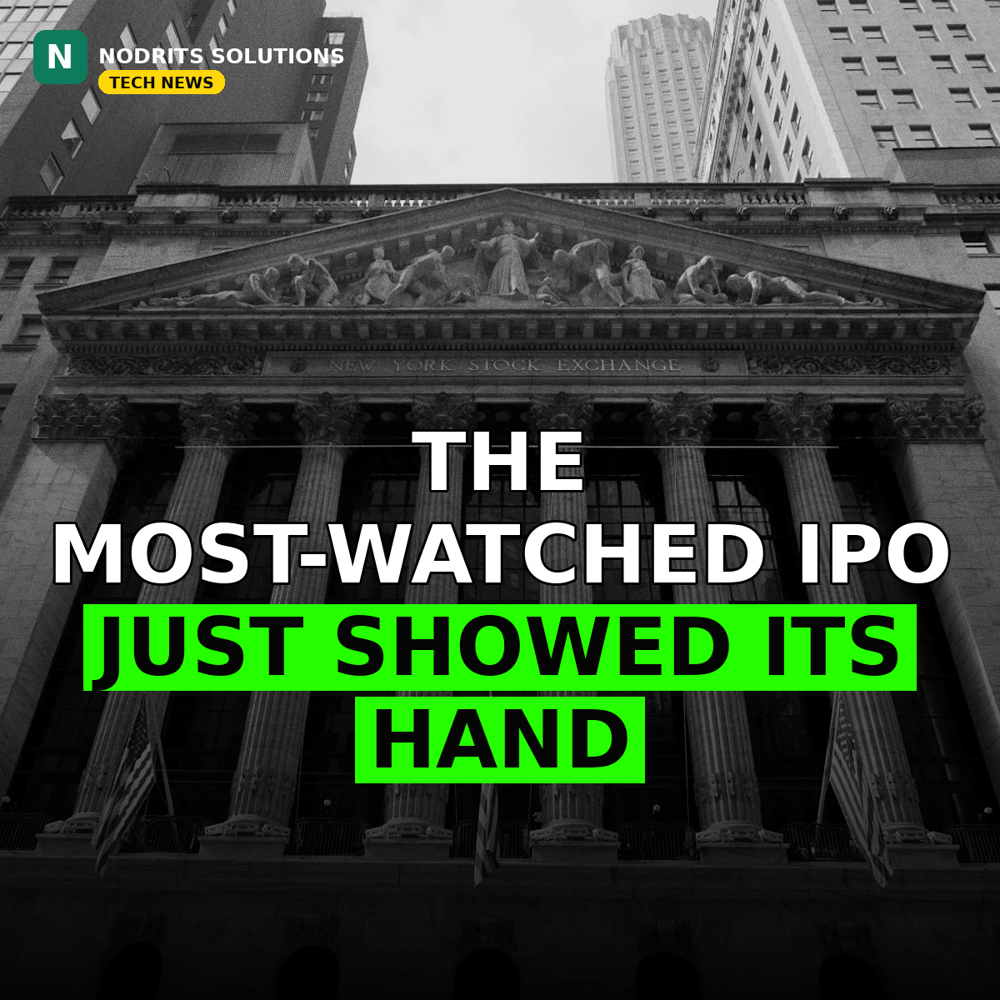

Anthropic Prices Its IPO at $70–$80 a Share, With $26 Billion Lined Up From Tech Giants

The most-watched IPO on Wall Street finally has a price tag. Anthropic plans to sell about 867 million new shares at $70 to $80 each, aiming to raise up to about $69.3 billion — and seven of the biggest names in technology have already committed a combined $26 billion to buy in alongside the public offering. Shares are expected to start trading on the Nasdaq under the ticker "ANT" as soon as Thursday or Friday of next week.
What happened
According to a filing seen by Reuters, Anthropic intends to issue 866,666,664 Class A shares in the IPO at a proposed price range of $70 to $80 per share. Cornerstone investors will also sell 23,333,331 shares as part of the offering. Separately, Google, Nvidia, AMD, Broadcom, Micron, Microsoft and TSMC will invest a combined $26 billion through a private placement at the IPO price — paying the same per-share price as public investors on listing day. Together, the IPO and the placement would raise roughly $87 billion to $95 billion, setting terms for what could become the largest capital raise of any stock market debut. The Wall Street Journal reported that Anthropic is aiming for its shares to begin trading on the Nasdaq as soon as Thursday or Friday next week, with Goldman Sachs and Morgan Stanley advising on the deal. The implied valuation was not disclosed, because the total number of shares outstanding after the offering was not reported.
Why it matters
This is not just a big listing — it is a statement about who is funding the AI boom. The seven companies writing the $26 billion placement cheque are the same companies that supply Anthropic's chips, cloud capacity and networking gear: Nvidia and AMD make the accelerators, TSMC fabricates them, Broadcom and Micron supply the interconnect and memory, and Google and Microsoft run the clouds where Claude trains and serves customers. Amazon, a major existing Anthropic backer, does not appear among the seven. The pricing also lands after weeks of tense negotiation over value: the Financial Times reported Anthropic planned to raise $80 billion to $100 billion at a $1.25 trillion to $1.75 trillion valuation, while Reuters and the Journal reported on November 5 that prospective investors were pushing for a lower price after a sharp AI sell-off. Anthropic filed its S-1 on October 26 and an amended filing on November 2, which showed third-quarter revenue of $16.96 billion — up 1,127% year on year — alongside a $567 million operating loss and $895.4 billion in compute commitments.
What it means for you
For businesses and builders, the message is that the AI market is entering its public-market era: the company behind Claude will soon be priced by the open market every day, and its biggest suppliers are now also its shareholders. That alignment makes the AI supply chain tighter than ever — the fortunes of chipmakers, cloud providers and model builders are increasingly the same bet. For anyone watching AI spending, the listing will be the clearest public test yet of whether investors still believe the enormous compute bills behind frontier models are worth it.
The Nodrits take
When your suppliers become your shareholders, the line between customer and owner disappears — and that is exactly what this IPO shows about the AI economy in 2026. The real question now is whether the public market prices Anthropic like a software company or like an infrastructure bet. What do you think — is $70 to $80 a fair starting price for the company behind Claude? Tell us in the comments.
Need a website, SaaS product or AI workflow built right?
Nodrits Solutions designs, develops and automates for businesses in Pakistan, the USA, UK, UAE and Saudi Arabia.
Talk to Nodrits →Sources: Reuters (filing seen by Reuters, via InvestingLive); CNBC; The Wall Street Journal (via TechCrunch); Financial Times. Published November 10, 2026.